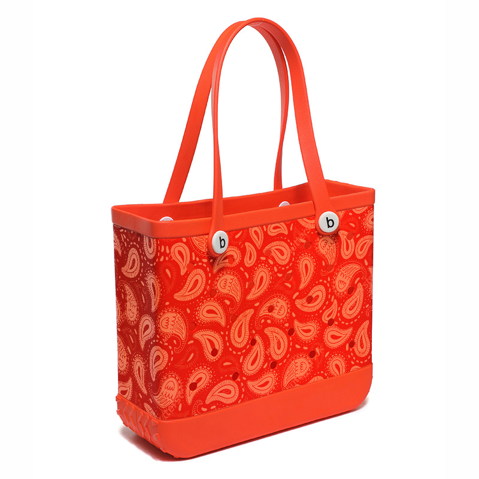

Trends
Top 5 EVA Beach Bag Trends for 2024
Discover the latest design trends that are shaping the EVA beach bag industry this year, from vibrant colors to innovative features.
Your Guide to EVA Beach Bags
Discover the latest trends, manufacturing insights, and expert tips about EVA beach bags from our industry professionals.
Discover the latest design trends that are shaping the EVA beach bag industry this year, from vibrant colors to innovative features.
Learn about the key factors that determine EVA material quality and how it affects the durability and performance of beach bags.
A comprehensive guide to designing custom EVA beach bags, including color selection, size optimization, and branding considerations.
Everything you need to know about starting a beach bag business, from market research to finding the right manufacturing partner.
Explore how EVA materials are becoming more sustainable and what this means for environmentally conscious consumers.
Learn about the essential quality control measures that ensure every EVA beach bag meets the highest standards.
Discover how color choices impact consumer behavior and which colors are most effective for different target markets.
Explore the must-have design features that make EVA beach bags both practical and appealing to consumers.
An in-depth look at the current state of the global beach bag market and emerging opportunities for businesses.
Take a behind-the-scenes look at how EVA beach bags are manufactured, from raw materials to finished products.
Learn about innovative ways to recycle and upcycle EVA materials, contributing to a more sustainable future.
Explore how beach bags have become essential fashion accessories and what trends are driving consumer preferences.
Help your customers choose the perfect beach bag size with this comprehensive guide to dimensions and capacity.
Discover effective marketing strategies for building a successful beach bag brand in today's competitive market.
Understanding the various international testing standards and certifications required for EVA beach bag exports.
Explore innovative approaches to reduce the environmental impact of EVA bag manufacturing processes.
Discover how technology is being integrated into beach bag designs to create smarter, more functional products.
Learn how to apply ergonomic design principles to create beach bags that are both comfortable and functional.
Strategies for building an efficient and reliable supply chain for your beach bag business operations.
Explore the latest innovations in EVA manufacturing technology and what they mean for the future of beach bags.